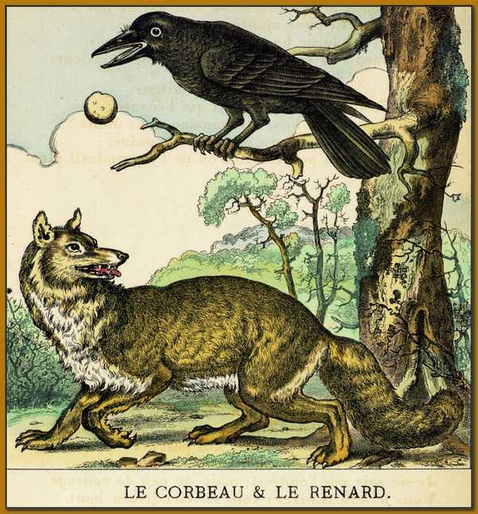

Mon article
Bla bla bla bla
Bla bla bla bla
Bla bla bla bla
header
Je suis gentil et j'apprend le HTML
Ceci est un paragraphe avec un retour à la ligne je reste dans le même paragraphe si je fais ça, ça saute pas de ligne
Attention, mot important : mot important
Attention, mot encore plus important : mot encore plus important
Surligné
Le 2eme va vous étonner : Ici
Lien vers mon CV : Mon CV
Vidéo d'utilité publique : Vidéo d'utilité publique
Vidéo d'utilité publique qui ouvre un nouvel onglet : Vidéo d'utilité publique
Vous souhaitez voir l'image dans sa taille d'origine ? Cliquez dessus ! (et en plus elle s'ouvre dans un nouvel onglet ;) )
blabla bla test pour css
 Maître Corbeau, sur un arbre perché, Tenait en son bec un fromage. Maître Renard, par l’odeur alléché, Lui tint à peu près ce langage : « Hé ! bonjour, monsieur du Corbeau Que vous êtes joli ! que vous me semblez beau ! Sans mentir, si votre ramage Se rapporte à votre plumage, Vous êtes le phénix des hôtes de ces bois. » À ces mots le Corbeau ne se sent pas de joie ; Et pour montrer sa belle voix Il ouvre un large bec, laisse tomber sa proie. Le Renard s’en saisit, et dit : « Mon bon monsieur, Apprenez que tout flatteur Vit aux dépens de celui qui l’écoute : Cette leçon vaut bien un fromage, sans doute. » Le Corbeau, honteux et confus, Jura, mais un peu tard, qu’on ne l’y prendrait plus.
Ce texte est écrit en dessous de la fable, voir css
Paragraphe test centre + gestion overflow
Birds are a group of warm-blooded vertebrates constituting the class Aves, characterised by feathers, toothless beaked jaws, the laying of hard-shelled eggs, a high metabolic rate, a four-chambered heart, and a strong yet lightweight skeleton. Birds live worldwide and range in size from the 5.5 cm (2.2 in) bee hummingbird to the 2.8 m (9 ft 2 in) ostrich. There are about ten thousand living species, more than half of which are passerine, or "perching" birds. Birds have wings whose development varies according to species; the only known groups without wings are the extinct moa and elephant birds. Wings, which evolved from forelimbs, gave birds the ability to fly, although further evolution has led to the loss of flight in some birds, including ratites, penguins, and diverse endemic island species. The digestive and respiratory systems of birds are also uniquely adapted for flight. Some bird species of aquatic environments, particularly seabirds and some waterbirds, have further evolved for swimming.
Birds are feathered theropod dinosaurs and constitute the only known living dinosaurs. Likewise, birds are considered reptiles in the modern cladistic sense of the term, and their closest living relatives are the crocodilians. Birds are descendants of the primitive avialans (whose members include Archaeopteryx) which first appeared about 160 million years ago (mya) in China. According to DNA evidence, modern birds (Neornithes) evolved in the Middle to Late Cretaceous, and diversified dramatically around the time of the Cretaceous–Paleogene extinction event 66 mya, which killed off the pterosaurs and all non-avian dinosaurs.
Many social species pass on knowledge across generations, which is considered a form of culture. Birds are social, communicating with visual signals, calls, and songs, and participating in such behaviours as cooperative breeding and hunting, flocking, and mobbing of predators. The vast majority of bird species are socially (but not necessarily sexually) monogamous, usually for one breeding season at a time, sometimes for years, and rarely for life. Other species have breeding systems that are polygynous (one male with many females) or, rarely, polyandrous (one female with many males). Birds produce offspring by laying eggs which are fertilised through sexual reproduction. They are usually laid in a nest and incubated by the parents. Most birds have an extended period of parental care after hatching.
Many species of birds are economically important as food for human consumption and raw material in manufacturing, with domesticated and undomesticated birds being important sources of eggs, meat, and feathers. Songbirds, parrots, and other species are popular as pets. Guano (bird excrement) is harvested for use as a fertiliser. Birds figure throughout human culture. About 120 to 130 species have become extinct due to human activity since the 17th century, and hundreds more before then. Human activity threatens about 1,200 bird species with extinction, though efforts are underway to protect them. Recreational birdwatching is an important part of the ecotourism industry.
mot trop long qui rentre pas dans le cadre aux proportions définies :
aaaaaaaaaaaaaaaaaaaaaaaaaaaaaaaaaaaaaaaaaaaaaaaaaaaaaaaaaaaaaaaaaaaaaaaaaaaaaaaaaaaaaaaaaaaaaaaaaaaaaaaaaaaaaaaaaaaaaaaaaaaaaaaaaaaaaaaaaaaaaaaaaaaaaaaaaa